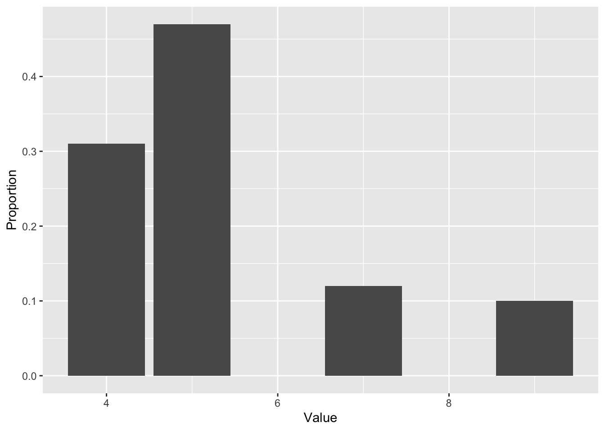
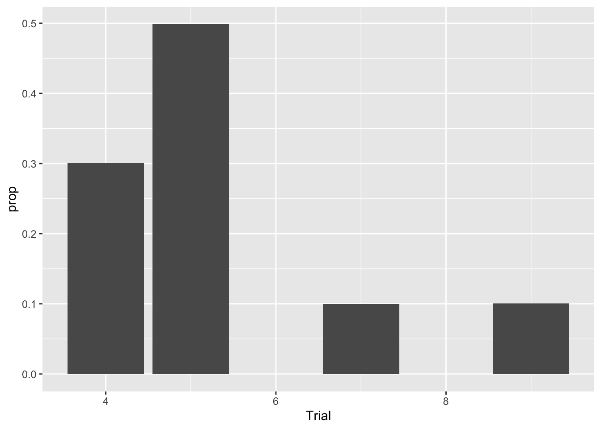

For the next few sections, we’ll be concerned with datasets of a single variable. It will be necessary that we learn some basic stuff from probability and statistics. This is be introductory, and some explanations will be very hand-wavy. In particular, while we’ll dip our toes into some probability notation, and perform a few calculations, we will mostly verify all of our claims through sampling with R. Of course, this is no substitute for the real thing, so we strongly recommend is taking a probability (and a statistics) course in the future. Hopefully the next few sections will serve as a motivation for what probability and statistics looks like thorugh a sampling perspective.
In probability, a major object is the random variable. There’s a precise way to define this, but for now, we just imagine that a random variable \(X\) is just some random quantity. For instance, \(X\) could be the result of a coin flip, or the number of points the Scranton lacrosse team scores, or the number of Coronavirus cases in a particular day.
Of course, one may object that none of these quantities are actually random. Theoretically, with enough information, we ought to be able to compute all of these things with pure certainty. Well, even that is a contentious point, and if we were allow ourselves down the philosophical rabbit hole, we’d find ourselves arguing about determinism and free will and a whole host of deep questions. One quick way out of this is to say that probability is the mathematics based on having partial information. Sure, perhaps we can get into the brains of every lacrosse player and figure out exactly what’s going to happen in a game. But given some basic facts (previous record of games, age of players, weather conditions, etc.), what’s the best guess we can make? Our limited information is a dataset.
Let’s focus on a random variable \(X\) (usually random variables are denoted by capital letters) which spit out real numbers. Some useful things to ask about \(X\) are
We’ll answer each of these questions through the notion of distributions. We’ll be using synthetic data for a bit, which is generated through a random number generator from R.
In this exercise, we are going to generate a random variable \(X\) which has the possible values \(S = \{4,5,7,9\}\) (the set \(S\) of possible values for \(X\) is called a state space. The random variable \(X\) is a discrete random variable, meaning that it can takes only finitely many values (well, it could technically be countably infinite, but let’s not worry about that for now). For discrete random variables, we can describe \(X\) by the probability that it takes for each value, denoted by the `blackboard script’ \(\mathbb P\). Let’s say the probabilities for values of \(X\) are given by
\[\begin{equation} \mathbb P(X = 4) = .3, \quad \mathbb P(X = 5) = .5, \quad \mathbb P(X = 7) = .1, \quad \mathbb P(X = 9) = .1, \end{equation}\]
Here is a function using sample that will generate \(n\) random instances of \(X\):
samplex = function(n){
sample(x = c(4,5,7,9), n, replace = T, prob = c(.3,.5,.1,.1))
}
samps = samplex(100)
samps## [1] 5 9 5 5 5 4 7 9 4 7 4 5 4 7 4 5 5 5 4 5 5 7 7 5 4 9 4 5 5 4 5 5 5 4 4 7 5
## [38] 4 7 5 4 5 5 5 5 9 4 7 5 5 4 5 5 5 5 5 7 4 9 4 4 5 4 5 4 5 4 5 5 5 5 5 4 5
## [75] 7 5 4 4 4 4 5 4 4 9 5 5 9 4 4 9 9 9 4 5 7 5 5 5 5 7Q: What do you think each part of the code does?
Let’s convert our numeric vector samps into a dataframe.
samps = data.frame(samps)
str(samps)## 'data.frame': 100 obs. of 1 variable:
## $ samps: num 5 9 5 5 5 4 7 9 4 7 ...We’ll give the column a name of “Trial”, since we performed 100 trials of \(X\).
colnames(samps) = "Trial"
head(samps)## Trial
## 1 5
## 2 9
## 3 5
## 4 5
## 5 5
## 6 4Now we can make some basic visuals with ggplot2. Let’s take a look at a histogram:
samps %>% ggplot()+geom_bar(aes(x = Trial, y = ..count../sum(..count..))) +
labs(x = 'Value', y = 'Proportion')
Note that the fractions that each of the possible values in \(S\) takes is pretty close to the probabilities assigned from before. This illustrates an important theme: as the number of samples increases, these fractions will converge to the assigned probabilities. Such a phenomenon is called the law of large numbers, and we’ll talk about this in more detail soon.
Let’s ramp up the number of samples and see what happens
samps = samplex(1000000)
samps = data.frame(samps)
colnames(samps) = "Trial"
samps %>% ggplot()+geom_bar(aes(x = Trial
, y = stat(prop)))
sum(samps == 4)/dim(samps)[1]## [1] 0.300657sum(samps == 5)/dim(samps)[1]## [1] 0.498838sum(samps == 7)/dim(samps)[1]## [1] 0.100233sum(samps == 9)/dim(samps)[1]## [1] 0.100272Now our fractions are much closer to the actual probabilities. Something about this process is a bit artificial, however. In the real world, of course, we don’t have the luxury of generating infinite amounts of data to find out the value of a probability. This is where statistics comes into play. If we have only finitely many datapoints, then we need to make a best guess about what probability. We may also want some type of statement about how good our guess is, as well. This will be covered with the concept of confidence intervals. Much more on this later.